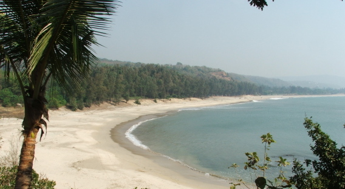
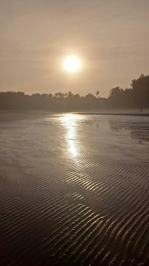
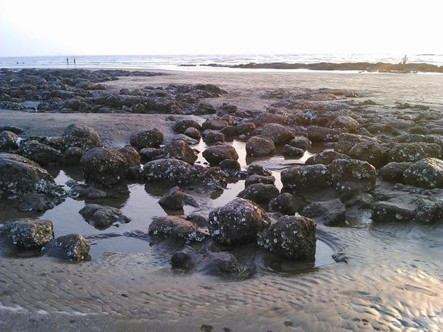

| Home | Sign Up | Alibag | Beaches | Contact Us |
|---|
Awas Beach:



Located close to Kihim, Awas beach is a secluded stretch of beach with casuarina and suru trees lining its shores. A vast stretch of sandy beach, Awas beach is a far less crowded beach and is the best beach to be in if you are looking to be away from everything in this part of Alibaug.
| Feedback |
| ©Alibag |